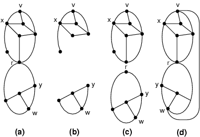

Figure 1: (a) A cut vertex r; (b) removing r results in more connected components; (c) the biconnected components separable by r; (d) when edge (v, w) is added, r is no longer a cut vertex (by flipping the lower biconnected component, y remains on the external face).
Back to Article